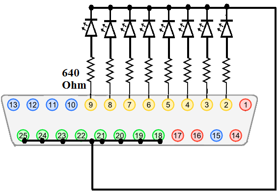
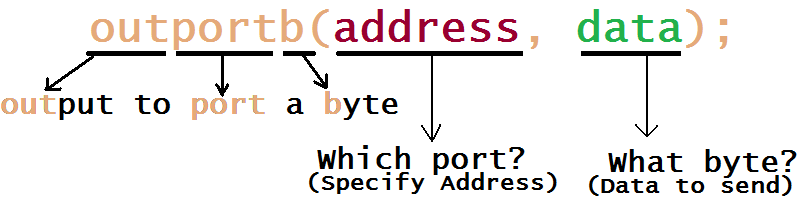

| WR Home Topic Home | Chapter: 1 |
| <Previous | Next> |
Chapter 01
Hello World in the Hardware World !
Page 2
Also consider the following diagram:-

Eight LEDs are connected to the printer-port via eight resistances. To glow an LED, the anode must be connected to the positive supply and cathode must be connected to negative/ground. In the above circuit we can see that the cathodes of all the LEDs are connected to ground. If +5Volt appears on Pin-2 the first LED can glow.
In computers there are many ports. In order to distinguish one port from the other all ports have different (unique) addresses. For example let us assume that the address for the printer port is 378-Hexadecimal (written as 0x378 in C-language).
Let us imagine that there is a function named "outportb", which can output a byte to a port. Two parameters are passed to this function: The data to be outputted and the port address.

it outputs the "data" to the "address"
So, if outportb(0x378, 0xff); is called from a C-program, then all LEDs must glow. As 0xff (1111- 1111 in binary) will set all the pins (Pin2 to Pin9) to Logic_1 or +5V.
Similarly, if outportb(0x378, 0x00); is called from a C-program, then all the LEDs will be off. As 0x00 (0000- 0000 in binary) will clear all the pins (Pin2 to Pin9) to Logic_0 or Ground-voltage or Zero-volt.
| WR Home Topic Home | Chapter: 1 |
| <Previous | Next> |